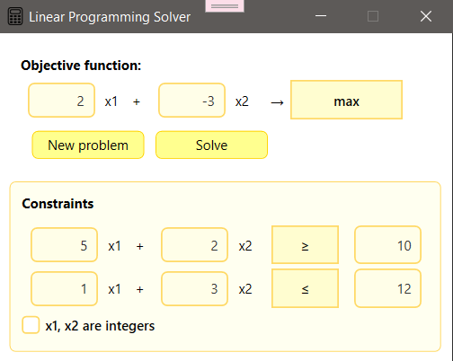

Linear Programming Calculator
Linear Programming Calculator is a product that helps you solve LPPs using the simplex method for constraints that are greater than or equal to, the Big M method for constraints that are less than or equal to or equal to, and finding integer solutions using Gomory cuts.
Quick Start üèÉ:
When you start the project, it displays a Startup window where you can set the number of variables and constraints.

Then, when you press Generate Problem, another window will appear where you can set up all the necessary parameters. You can also return to the startup window, press New Problem, to edit the number of variables or constraints.

Finally, when you press Solve button, the application navigates to the Result window, where you can view all steps of the problem?solving process. Additionally, you can edit the current problem by pressing Edit problem, or start a new one by pressing New problem.